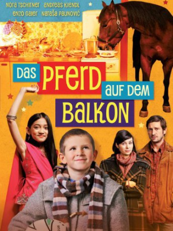

#6709 Das Pferd auf dem Balkon
 
 IMDB-Wertung: 6.3 / 10
IMDB-Wertung: 6.3 / 10  Metascore: 0
Metascore: 0 
The boy Mika suffers from Asperger's and finds it difficult to communicate and make friends. Then he sees a real horse on his neighbour's balcony. He feeds the animal apples and starts making friends with it. The horse's owner owes money and the horse has to be hidden from his ruthless creditors. Dana, an Indian girl from Mika's school, shares his love for the horse, and they have various adventures through their efforts to save the horse from slaughter and the ruthless creditors of its owner. For the first time in his life Mika has a real friend.
Jahr: 2012
Dauer: 88 Minuten
FSK: 0
Land: Österreich Studio: Neue Visionen FilmverleihTonspuren:
Untertitel:
Auflösung: 1080p (1920x1040) Größe: 4587 MB
Genre: Familie
Regisseur: Hüseyin Tabak
Drehbuch: Milan Dor
Soundtrack:
Darsteller:
 Nora Tschirner als Lara
Nora Tschirner als Lara- Enzo Gaier als Mika
- Natasa Paunovic als Dana
- Andreas Kiendl als Sascha
- Bibiane Zeller als Hedi
- Ernst Stankovski als Boris
- Branko Samarovski als Branko
 Murathan Muslu als Schurli
Murathan Muslu als Schurli- Alexander E. Fennon als Toni
- Jasper Command als Bucephalus
- Shock Bunny Command als Bucephalus
Datei: X:\2012(N-Z)\Pferd auf dem Balkon, Das (2012, FSK0, 1920x1040).mkv seit 08.08.2017
Festplatte: HD 2012(N-Z)-2013(A-H)
 Es gibt insgesamt 138 Filme in der Gruppe '2012(N-Z)'
Es gibt insgesamt 138 Filme in der Gruppe '2012(N-Z)'